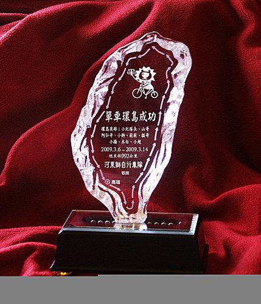

「河東獅環島九人組」：小紀隊長、山哥、阿弘哥、小獅、莉莉、貓哥、小揚、木白、小超7男2女，歷經落山風、大雨、寒冷、烈日的九天煎熬，憑藉過人的毅力、耐力、體力及意志力，總騎乘里程數992公里，完成單車客的環島夢想，河東獅自行車車隊特別精製環島獎杯鼓勵這9位環島英雄。
「河東獅環島九人組」：小紀隊長、山哥、阿弘哥、小獅、莉莉、貓哥、小揚、木白、小超7男2女，歷經落山風、大雨、寒冷、烈日的九天煎熬，憑藉過人的毅力、耐力、體力及意志力，總騎乘里程數992公里，完成單車客的環島夢想，河東獅自行車車隊特別精製環島獎杯鼓勵這9位環島英雄。

james wu(蚵ㄚ煎) 於 2009-05-07 16:16:33 回應
這個完成獎盃 ,是我看過最美/最有收藏價值的獎盃 不曉得有沒有人願意割愛,借我回去擺幾天 過過乾癮也不錯, ,
, .
.
河東獅 於 2009-05-08 12:08:56 回覆
吳大，
改天SHOW一下實物給你欣賞，因未照片緣故，無法顯示出燈光效果，我們的獎杯是會發出七彩燈光的喔！
沒問題，我可以將獎杯借給你，分享環島完成的喜悅！
小超
河東獅 於 2009-05-06 13:10:15 回應
雖是自費負擔環島獎盃， 但手握設計如此精美， 且會發出七彩炫光的水晶盃， 還真會讓人飄然若炫。 真是一座值得珍藏的禮物， 感謝河東獅小紀隊長及超哥的精心設計及付出。 很想再拿第二座的 小獅